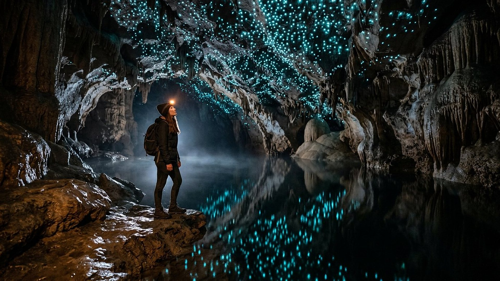

Accueil → Rechercher
Rechercher
Un mot, un animal, une constante, un savant : retrouvez en un instant la salle qui en parle.

Dans tout le musée
Rechercher un mot
Saisissez un ou plusieurs mots, par exemple « gecko » ou « constante ».
La recherche porte sur le texte des vingt-deux salles, de l'accueil et des pages annexes. Elle se fait entièrement sur votre appareil, fonctionne hors connexion et n'enregistre rien.
Sans moteur de recherche
Autres façons de trouver
- Le plan complet des vingt-deux salles, avec trois parcours.
- Le glossaire, pour comprendre un terme technique.
- La liste des sources, filtrable par auteur, titre ou numéro de fait, dans Méthode et sources.
- Les questions fréquentes.